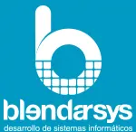

Blendarsys

U-Lab Plaza Sán Cristobal, 14 03002 Alicante
contactar@blendarsys.com
900 525 266
966 262 823
910 052 665
Copyright © 2011 - 2021 Blendarsys. Todos los derechos reservados.
Blendarsys desarrolla herramientas software a medida para investigación en salud y biotecnología. Nuestra filosofía se basa en ayudar a los investigadores y sus proyectos. Por ello, además de nuestros servicios como empresa, nos gustaría contribuir con la comunidad científica compartiendo nuestro expertise.
¿Cómo? A través de un blog profesional sobre herramientas digitales aplicadas a la investigación: tips de uso y optimización de software, artículos informativos sobre los últimos avances tecnológicos, tips de manejo de datos y … ¿algo más?
¿Qué buscamos? Conocer en qué podemos ayudar. Identificar las necesidades tecnológico-digitales de personas inmersas en la investigación en salud y biotecnología, tanto de sector público como empresa. Si vamos a hacer este pequeño esfuerzo, queremos aseguramos de que nuestros artículos sean de utilidad.
¿Qué necesitamos concretamente? Corto y claro: respuestas de personas implicadas en la investigación, en este simple y rápido cuestionario de 7 preguntas.
Para Blendarsys lo importante son los investigadores. Si sabemos qué es relevante, podremos crear contenido que sirva y aporte algo de valor a las tareas diarias o a los proyectos.
Responda a estas preguntas seleccionando tantas opciones como necesite.
Si tiene curiosidad, siganos en Linkedin
inU-Lab Plaza Sán Cristobal, 14 03002 Alicante
contactar@blendarsys.com
900 525 266
966 262 823
910 052 665
Copyright © 2011 - 2021 Blendarsys. Todos los derechos reservados.